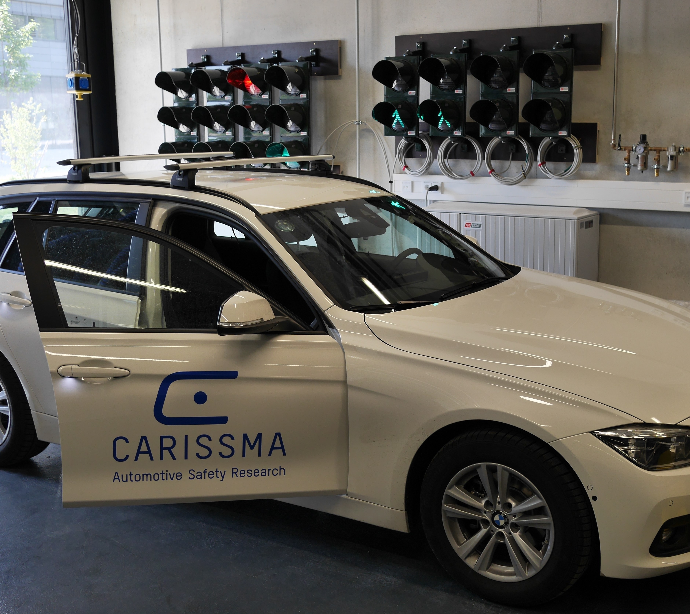
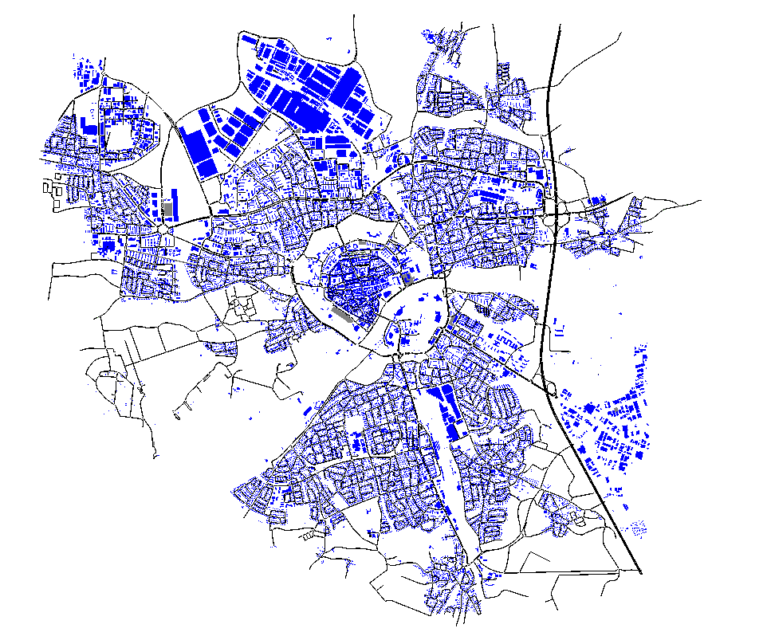
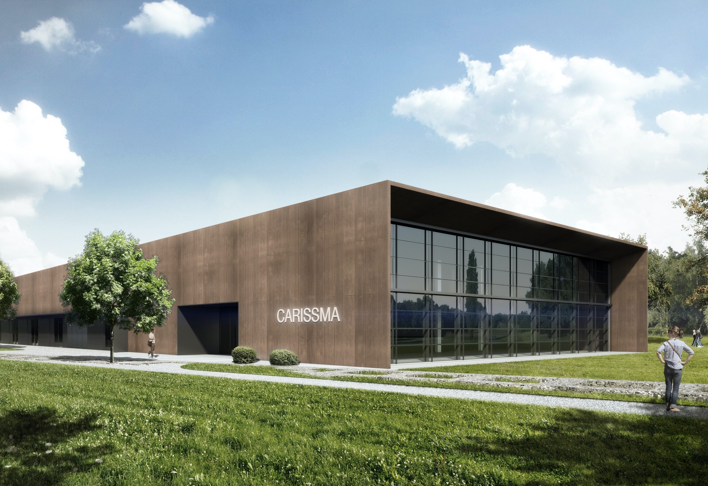
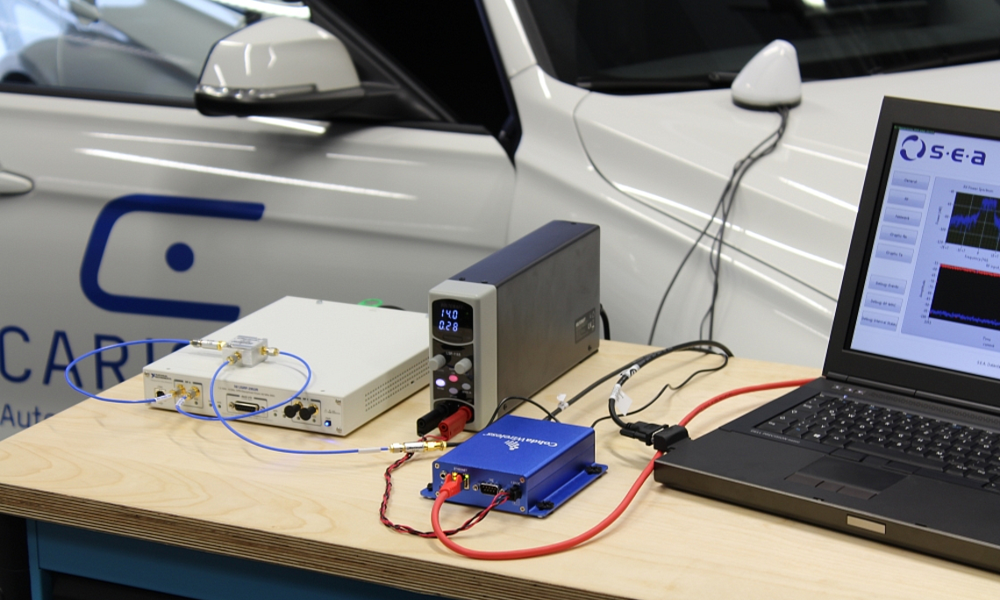
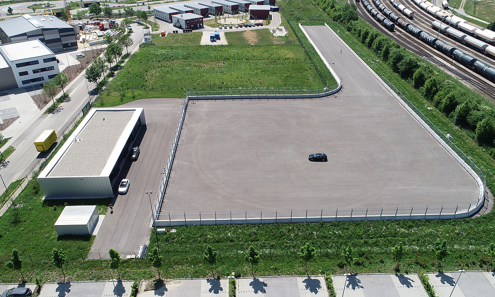

Equipment
The Car2X Lab makes use of cutting edge demonstration and test equipment to develop advanced solutions.

Projects
Projects undertaken by the Car2X Lab involve the development of software for simulation and modelling.

Facilities
The Car2X Lab employs state of the art facilities to validate and refine its project efforts.
A few words about us...
In the Car2X laboratory, research is conducted into communication between motor vehicles and with transportation infrastructure (traffic lights, toll bridges, intelligent road signs etc.), while taking into consideration other road users (pedestrians and cyclists). The focus of the research is on the methodical testing of Car2X techniques, protocols and applications, as well as the development and examination of new technologies and systems. In particular, there is a focus on communication support for vehicle automation.
Equipment
The Car2X Lab employs various equipment such as test vehicles, in-car PCs for, among other things, sensor data fusion over numerous interfaces (CAN, FlexRay, LTE, WiFi etc.), IEEE 802.11p / ETSI ITS-G5 controllers, Car2X roadside units and high-performance simulation computers for Hardware-in-the-Loop (HIL) performance and network tests.

Projects
Our team possesses extensive experience in the design and development of embedded system software as well as Car2X simulation models. Some of the projects developed include ’Artery’ and 'Artery-C' (C-V2X) for simulating Car2X applications, InTAS (a SUMO scenario of Ingolstadt city) and our implementation of the ETSI ITS-G5 protocols, ’Vanetza’.
Facilities
CARISSMA houses a total of ten state-of-the-art test facilities including the indoor test facility for integrated safety systems (crash tests and robot-controlled vehicle tests), the Car2X lab (us!), a high performance simulation cluster, an HiL lab and a full vehicle test bench. CARISSMA also operates an outdoor test facility for integrated safety systems.
